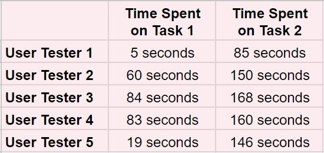
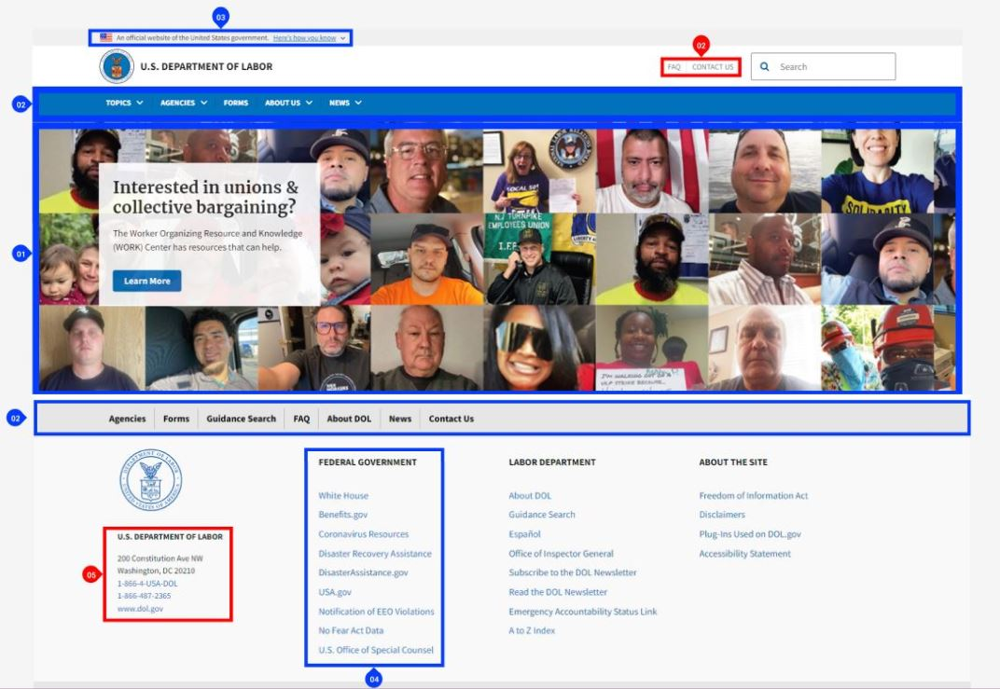
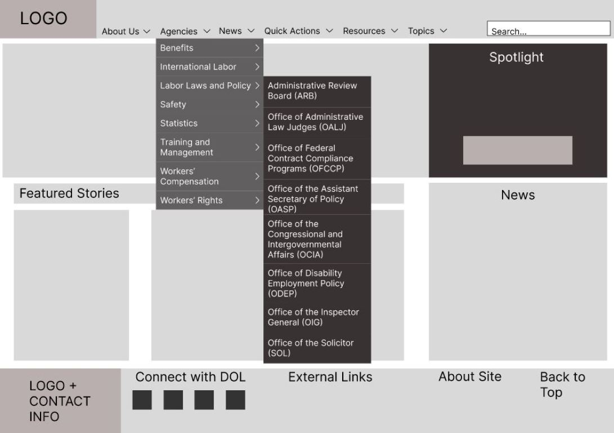
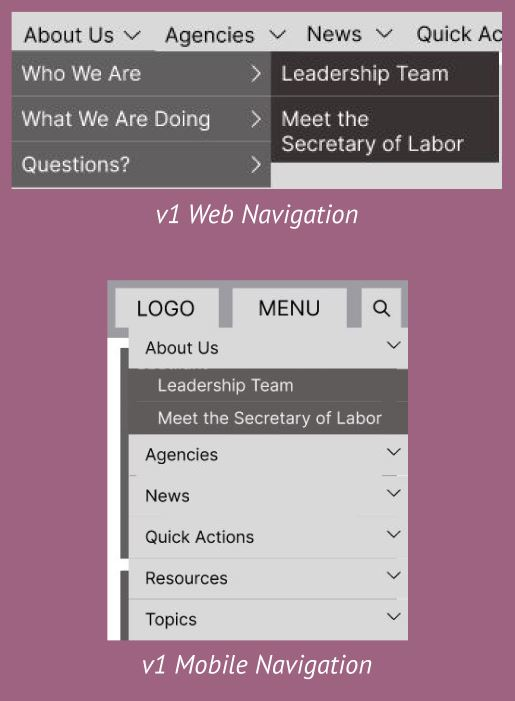
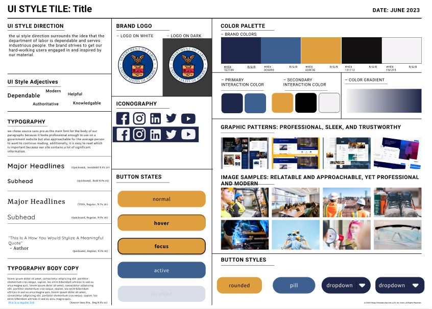
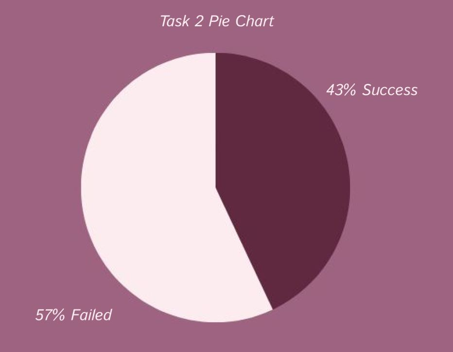
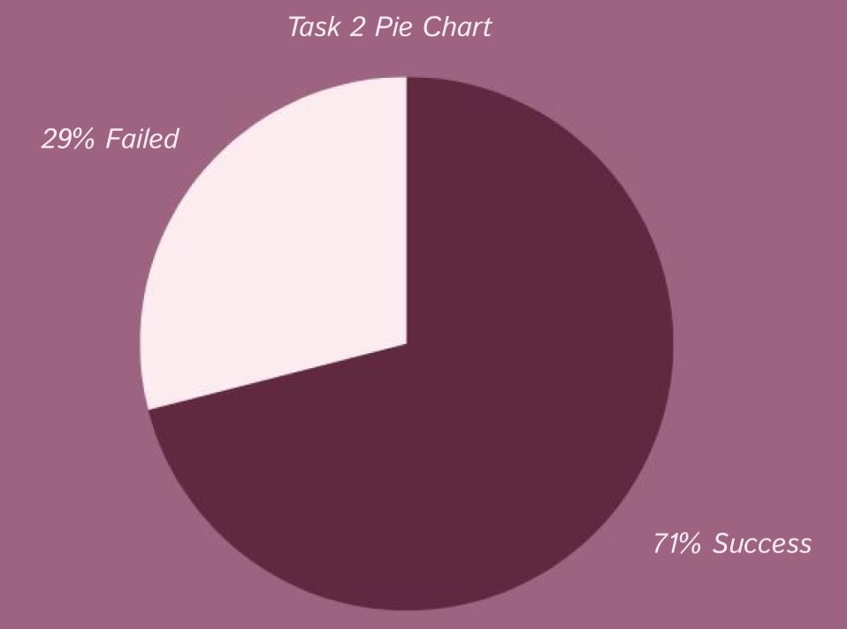

What's the Problem?
The question was, what should I focus on first in my redesign of the Department of Labor’s website? How could I solve the problem of user fatigue due to too much information? The answer was simple. Test the current website to discover user pain points. I started off with five usability tests on the original website (www.dol.org). I asked people who are currently employed (or have been previously employed) to complete two navigation tasks to see how they searched for information on the website.
Researching the Problem

The two navigation tasks were:
- Task 1: Get to the OSHA homepage
- Task 2: Find information on heat-related illnesses and first aid
Issues found with the current website’s navigation:
- The navigation bar contained too many items in the dropdown menu
- The search bar yielded too many irrelevant results
Defining the Problem
I started off by annotating the original website and making notes of the content and functional pieces I wanted to change in my redesign. Here are 3 major themes in my annotations: The navigation bar should be more consistent and easier to use. The hierarchy of content is unclear on which information is most important. UI elements, such as pictures or tables, are too busy.

Next, I did some card sorting to tackle reducing the information in the dropdown menus of the navigation bar. Basing it on the original navigation bar, I wrote down every significant topic on index cards and began the card sorting. I started off by defining each card, then followed it by grouping the cards based on definition. Finally, I structured my cards by making subgroups within the main categories.
From the card sorting, I came up with a site map for my redesign. With a clear site map in place, I was ready to move onto prototyping my redesign.
Designing for a Solution
The next phase of this redesign project involved a mixture of prototyping and testing. During this process, I tested my designs among 15 user testers and gained lots of valuable feedback for each iteration I made. I created desktop and mobile prototypes to showcase the responsive web design. I made 4 versions of each prototype and improved upon navigation bar in every iteration.
Version 1 of the Redesign

I conducted 4 five second usability tests on both web and mobile versions. From the usability test, I discovered that there was still too much information in the dropdown menus even in my redesign.
I also learned that there were inconsistencies between the web and mobile versions of my navigation menus.

Finally, it became apparent that the menus going out of frame made the content difficult to read.
Changes I made based on that feedback:
- Removed the “Agencies” tab and made it its own search tool (titled “Find an Agency”) and moved it under “Quick Actions” tab
- Added in the missing subsections I left out in the first version of the mobile prototype
- Realigned the dropdown menu of the mobile prototype

Next I created a UI Style Tile to determine the branding direction I wanted to go with in my redesign. The style choices I made surrounded the idea that the Department of Labor is a dependable organization that serves industrious people. I wanted the colors and styling of the redesign to show that the Department of Labor is helpful, knowledgeable, authoritative, and modern.
Mock Up (And More Testing!)
I created a high-fidelity mock up using the UI style tile I had made and the second iteration of my prototypes. I conducted 7 usability tests on my desktop and mobile prototypes. There were 6 navigation tasks in total, 3 for the desktop prototype and 3 for the mobile prototype.
Version 3 of the Redesign
The 3 tasks for the desktop prototype were:
- Task 1: Find information on health plans and benefits (100% success rate)
- Task 2: Find information on mental health in the workplace (43% success rate)
- Task 3: Find the DOL’s form finder tool (100% success rate)


The 3 tasks for the mobile prototype were:
- Task 1: Find a contact us page for the DOL (57% success rate)
- Task 2: Find information on unemployment insurance (71% success rate)
- Task 3: Find the DOL’s blog (85% success rate)
The changes I made on the navigation based on the desktop usability testing:
- Compiled the “Topics” and “Resources” tabs into one singular tab titled “Resources”
- Changed “Quick Actions” to “Search Tools”
The changes I made on the navigation based on the mobile usability testing:
- Renaming the subsection “Questions” to “Contact Us”
- Combining “Topics” and “Resources” tab so mobile matches the desktop version